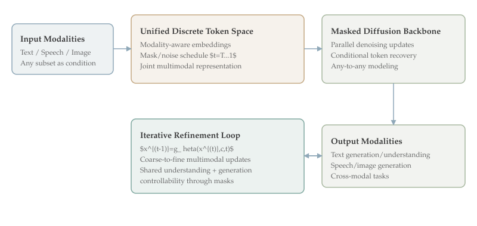

<!doctype html>
<html lang="en">
<head>
  <meta charset="utf-8">
  <meta name="viewport" content="width=device-width, initial-scale=1">
  <title>Omni-Diffusion: Unified Multimodal Understanding and Generation with Masked Discrete Diffusion</title>
  <style>
:root {
  --bg: #FAF8F5;
  --text: #3A3A3A;
  --text-secondary: #6A6A6A;
  --emph: #C4A882;
  --blue: #8FA8B8;
  --green: #A8B8A0;
  --teal: #7FA8A0;
  --gold: #C8B878;
  --lavender: #9B8FBF;
  --red: #A86464;
}
* { box-sizing: border-box; }
body {
  font-family: 'Palatino Linotype', 'Book Antiqua', Palatino, serif;
  font-size: 17px;
  line-height: 1.7;
  color: var(--text);
  background: var(--bg);
  max-width: 900px;
  margin: 0 auto;
  padding: 40px 32px;
}
h1 { font-size: 32px; font-weight: 700; margin-bottom: 12px; }
h2 { font-size: 24px; font-weight: 600; margin-top: 36px; margin-bottom: 12px; }
h3 { font-size: 20px; font-weight: 600; margin-top: 24px; margin-bottom: 10px; }
a { color: #5A7A8A; text-decoration: none; border-bottom: 1px dotted rgba(90,122,138,.4); }
a:hover { border-bottom-style: solid; }
p { margin: 10px 0; }
ul { margin: 8px 0 12px 20px; }
li { margin: 6px 0; }
.muted { color: var(--text-secondary); }
.meta { margin: 14px 0 16px 0; }
.figure-wrap { margin: 16px 0 22px 0; }
.figure-wrap img { width: 100%; max-width: 800px; border: 1px solid rgba(106,106,106,.2); border-radius: 6px; background: #fff; }
.box-blue { background: rgba(143, 168, 184, 0.12); border-left: 4px solid #8FA8B8; padding: 16px 20px; margin: 18px 0; border-radius: 4px; }
.box-green { background: rgba(168, 184, 160, 0.12); border-left: 4px solid #A8B8A0; padding: 16px 20px; margin: 18px 0; border-radius: 4px; }
.box-pink { background: rgba(196, 168, 130, 0.12); border-left: 4px solid #C4A882; padding: 16px 20px; margin: 18px 0; border-radius: 4px; }
.box-gold { background: rgba(200, 184, 120, 0.12); border-left: 4px solid #C8B878; padding: 12px 16px; margin: 14px 0; border-radius: 4px; }
.box-lavender { background: rgba(155, 143, 191, 0.12); border-left: 4px solid #9B8FBF; padding: 16px 20px; margin: 18px 0; border-radius: 4px; }
.box-red { background: rgba(168, 100, 100, 0.10); border-left: 4px solid #A86464; padding: 16px 20px; margin: 18px 0; border-radius: 4px; }
.badge { display: inline-block; padding: 3px 10px; border-radius: 12px; font-size: 13px; font-weight: 600; margin-right: 8px; }
.badge-upvotes { background: rgba(200, 184, 120, 0.2); color: #8A7A40; }
.badge-rank { background: rgba(143, 168, 184, 0.2); color: #5A7A8A; }
.badge-daily { background: rgba(168, 184, 160, 0.2); color: #5A7A5A; }
.badge-extra { background: rgba(155, 143, 191, 0.2); color: #6A5A8A; }
code, pre { font-family: 'Fira Code', 'Source Code Pro', monospace; font-size: 15px; }
</style>
  <link rel="stylesheet" href="https://cdn.jsdelivr.net/npm/katex@0.16.11/dist/katex.min.css">
  <script defer src="https://cdn.jsdelivr.net/npm/katex@0.16.11/dist/katex.min.js"></script>
  <script defer src="https://cdn.jsdelivr.net/npm/katex@0.16.11/dist/contrib/auto-render.min.js" onload="renderMathInElement(document.body, {delimiters: [{left:'$$',right:'$$',display:true},{left:'$',right:'$',display:false}]});"></script>
</head>
<body>
  <header>
    <h1>Omni-Diffusion: Unified Multimodal Understanding and Generation with Masked Discrete Diffusion</h1>
    <div class="box-gold meta">
      <span class="badge badge-rank">Rank #3</span>
      <span class="badge badge-upvotes">37 upvotes</span>
      <span class="badge badge-daily">Daily Paper</span>
      <div><strong>Authors:</strong> Lijiang Li, Zuwei Long, Yunhang Shen, Heting Gao, Haoyu Cao, Xing Sun, Caifeng Shan, Ran He, Chaoyou Fu</div>
      <div><strong>arXiv:</strong> 2603.06577</div>
      <div><strong>Date:</strong> 2026-03-11</div>
      <div><strong>Tags:</strong> daily papers, comprehensive analysis, priority-topic</div>
      <div class="muted">Generated: 2026-03-12 04:14:48.640 UTC</div>
    </div>
  </header>

  <section>
    <h2>1. Header</h2>
    <p>Omni-Diffusion is ranked #3 by upvotes in the HuggingFace daily list for 2026-03-11. This document follows the comprehensive-depth format and emphasizes technical mechanism, theoretical framing, and practical implications for post-training and multimodal system design.</p>
    <div class="box-blue"><strong>Source Coverage:</strong> Primary analysis source: AlphaXiv overview available. AlphaXiv full-text markdown unavailable; analysis based on overview + abstract + project metadata.</div>
  </section>

  <section>
    <h2>2. TL;DR</h2>
    <div class="box-pink">
      <p>Omni-Diffusion proposes a major architectural departure from autoregressive multimodal LLMs by using a mask-based discrete diffusion backbone for both understanding and generation. Instead of predicting one next token at a time, it iteratively denoises multimodal token sets across text, speech, and image channels.</p>
<p>The paper’s significance is strategic: it argues that unified multimodal systems may benefit from diffusion-style parallel refinement and joint distribution modeling, potentially improving controllability and modality symmetry over conventional autoregressive stacks.</p>
      <p><strong>Who should read this and why:</strong> This analysis targets researchers designing next-generation multimodal foundations, especially teams evaluating alternatives to autoregressive decoding for any-to-any tasks across language, audio, and vision.</p>
    </div>
  </section>

  <section>
    <h2>3. Background &amp; Prerequisites</h2>
    <div class="box-blue">
      <p>Most multimodal foundation models today are autoregressive at their core. Even when they support images or audio, generation often proceeds token by token through a language-centric decoder. This design has strong ecosystem support but imposes serial decoding and can produce asymmetry between understanding and generation paths.</p>
<p>Discrete diffusion offers an alternative: start from masked or noisy token states and iteratively denoise toward coherent outputs. In language and image domains, this can improve parallelism and provide flexible control over generation trajectory. Applying this idea to fully unified multimodal modeling is nontrivial because modalities differ in token structure, timescale, and semantics.</p>
<p>A prerequisite concept is token unification. To run one diffusion process over multiple modalities, the system needs discrete representations for text, speech, and images that can coexist in a shared sequence or graph while preserving modality-specific fidelity.</p>
<p>Another prerequisite is denoising schedule design. The model must learn how masking/noising interacts with each modality so that iterative updates improve all channels without letting one dominant channel, usually text, overtake others.</p>
<p>The paper positions itself against two established paradigms: fully autoregressive multimodal LLMs and hybrid systems where separate generators are glued onto language backbones. Omni-Diffusion seeks a native any-to-any alternative where the same backbone handles mixed input/output configurations.</p>
<p>This direction is timely because multimodal applications increasingly require bidirectional transformations: text to image, image+text to speech, speech+image to text, and editing-style conditioning. A unified non-autoregressive core could simplify system design if performance remains competitive.</p>
<p>The prior work context includes diffusion success in image generation and emerging discrete diffusion in language modeling. Omni-Diffusion extends that trajectory by claiming the first end-to-end any-to-any multimodal language model built entirely around masked discrete diffusion.</p>
<p>For readers from systems backgrounds, the core question is whether this architecture gives better scaling behavior and controllability at acceptable training complexity. The paper provides benchmark evidence aimed at this question.</p>
    </div>
  </section>

  <section>
    <h2>4. Problem &amp; Motivation</h2>
    <p>The problem is architectural lock-in. Autoregressive multimodal designs dominate, but they inherit sequential bottlenecks and language-first inductive biases that may limit balanced multimodal reasoning and generation.</p>
<p>Existing unified systems also struggle with modality symmetry: understanding tasks are often strong while high-quality generation requires separate specialized heads or external decoders. This fragmentation raises complexity and weakens true unification.</p>
<p>The authors argue that a single model should capture a joint multimodal token distribution directly, enabling flexible conditioning and output across modalities without bespoke pathways per task.</p>
<p>A second problem is control. Autoregressive generation offers limited natural mechanisms for global iterative correction across modalities. Diffusion-style denoising may provide finer control because the model can revise many positions in parallel each step.</p>
<p>Why now? Multimodal usage patterns are broadening beyond captioning or VQA to include synthetic audio, visual editing, and composite generation workflows. A backbone optimized only for left-to-right text continuation may not be the best long-term foundation.</p>
<p>The paper also responds to efficiency concerns. While diffusion historically required many steps, discrete masked formulations and improved schedules can reduce overhead and enable competitive performance in practical regimes.</p>
<p>At a research level, Omni-Diffusion tests whether architectural diversity itself can unlock new tradeoff frontiers. Even if autoregressive models remain strong, alternatives may excel in tasks where iterative global refinement is beneficial.</p>
<p>In summary, the problem is not just performance parity on benchmarks; it is finding a more general multimodal modeling primitive that scales across understanding and generation with less architectural patchwork.</p>
  </section>

  <section>
    <h2>5. Method / Approach</h2>
    <div class="figure-wrap">
      
    </div>
    <p>Omni-Diffusion represents text, speech, and image data as discrete tokens and trains a mask-based diffusion model to iteratively recover clean multimodal sequences from masked/noisy states. This allows any subset of modalities to serve as condition and any subset to be generated.</p>
<p>At each denoising step, the model predicts token distributions for masked positions across modalities, then updates the state according to the schedule. Because many positions are updated simultaneously, decoding can be parallelized relative to strict autoregressive rollout.</p>
<p>A generic objective is $$mathcal{L}=mathbb{E}_{x,t,m}left[-log p_	heta(x_mmid x_{ar m}^{(t)}, t, c)
ight]$$ where $m$ indexes masked tokens, $t$ is diffusion time step, and $c$ represents conditioning modalities. This formulation unifies understanding and generation as conditional denoising.</p>
<p>The architecture must handle modality heterogeneity. The paper describes a unified backbone with modality-aware token embeddings and alignment mechanisms so speech/image tokens retain their structure while participating in shared contextual reasoning.</p>
<p>One key design challenge is schedule calibration. If masking is too aggressive for one modality, denoising may underfit that channel; if too mild, the model may not learn robust cross-modal reconstruction. The reported system balances schedules to support both unimodal and multimodal tasks.</p>
<p>The training data and task mixture include bimodal and more complex multimodal settings, reflecting the any-to-any claim. This broad conditioning matrix is important because a model can appear unified while actually specializing in a narrow subset of transformations.</p>
<p>Compared with hybrid systems, Omni-Diffusion reduces reliance on external generators by keeping generation native to the same backbone. This may improve consistency between understanding and generation behavior, since both depend on shared internal representations.</p>
<p>A second equation useful for interpretation is iterative refinement: $$x^{(t-1)} = g_	hetaleft(x^{(t)}, c, t
ight)$$ with $t=T
ightarrow 1$. Early steps recover coarse structure; later steps refine modality-specific details. This coarse-to-fine dynamic can benefit tasks requiring global coherence before local fidelity.</p>
<p>The method’s practical complexity lies in tokenizer quality and cross-modal alignment data. Unified diffusion is only as good as the discrete representations it denoises.</p>
<p>From an implementation viewpoint, this architecture invites parallel hardware execution patterns. If optimized well, it could narrow the speed gap traditionally associated with diffusion methods.</p>
<p>The paper emphasizes that the model supports not only understanding tasks but also generation/editing scenarios involving multiple modalities simultaneously, strengthening the claim that diffusion can serve as a true multimodal backbone.</p>
<p>Overall, the method is an architecture-level bet: replace left-to-right autoregression with iterative masked denoising to obtain a more symmetric and potentially more controllable multimodal foundation.</p>
  </section>

  <section>
    <h2>6. Results &amp; Key Findings</h2>
    <div class="box-green">
      <p>Across diverse benchmarks, Omni-Diffusion is reported to outperform or match existing systems on tasks involving two or more modalities. This indicates the architecture is competitive rather than purely exploratory.</p>
<p>The strongest strategic result is feasibility: a fully diffusion-based any-to-any model can handle unified understanding and generation without collapsing into one dominant modality.</p>
<p>Performance parity with strong baselines suggests autoregression is not the only viable scaling path for multimodal foundation models. That widens the architectural search space for future systems.</p>
<p>The paper’s benchmark coverage across text, speech, and image tasks supports the claim that benefits are not confined to a single modality pair.</p>
<p>Another positive signal is integration simplicity. If one backbone can replace multi-model ensembles for certain workloads, deployment and maintenance complexity may decrease.</p>
<p>The reported results also imply that masked discrete diffusion can preserve semantic reasoning quality while supporting generative fidelity, a balance often difficult for unified models.</p>
<p>From a research-program perspective, the paper creates a concrete baseline for future diffusion-first multimodal work, enabling more rigorous comparisons over schedule design, tokenizer choices, and compute efficiency.</p>
<p>Practical adoption will depend on throughput, memory, and training cost details, but the initial evidence positions Omni-Diffusion as a credible alternative, not merely a niche experiment.</p>
<p>Community interest in this paper likely reflects demand for exactly this: principled alternatives to increasingly monolithic autoregressive multimodal pipelines.</p>
    </div>
  </section>

  <section>
    <h2>7. Limitations &amp; Open Questions</h2>
    <div class="box-pink">
      <ul>
  <li>AlphaXiv full text was unavailable in this run, so some implementation-level details remain high-level.</li>
  <li>Diffusion decoding can still be step-intensive; real-world latency comparisons need careful hardware-aware evaluation.</li>
  <li>Tokenizer dependence is high: weak discrete representations in any modality can bottleneck the whole system.</li>
  <li>Training such unified models may require substantial compute and curated multimodal mixtures.</li>
  <li>Benchmark breadth does not guarantee robustness on long-tail compositions or adversarial multimodal prompts.</li>
  <li>Interpretability of iterative denoising decisions is less mature than token-by-token autoregressive traces.</li>
  <li>Any-to-any capability claims should be stress-tested under compositional extrapolation, not only in-domain tasks.</li>
  <li>Integration with tool use and retrieval pipelines may require additional interface design beyond the core model.</li>
</ul>
    </div>
  </section>

  <section>
    <h2>8. Connections &amp; Context</h2>
    <div class="box-lavender">
      <ul>
  <li>Omni-Diffusion and [[05-internvl-u|InternVL-U]] attack the same macro problem from opposite angles: new backbone versus modular integration over a strong existing MLLM.</li>
  <li>Compared with [[04-mm-zero|MM-Zero]], Omni-Diffusion emphasizes architecture while MM-Zero emphasizes training algorithm and synthetic data generation loops.</li>
  <li>With [[02-thinking-to-recall|Thinking to Recall]], the shared theme is using additional structured computation to unlock capability, though one acts in architecture and the other in inference trajectories.</li>
  <li>Relative to [[01-geometry-guided-rl-3d-editing|RL3DEdit]], Omni-Diffusion focuses on unified multimodal generative primitives rather than domain-specific post-training rewards.</li>
  <li>Together, these papers indicate the field is simultaneously exploring new backbones, stronger post-training, and better objective alignment rather than relying on a single scaling strategy.</li>
</ul>
      <p>For practitioners deciding between autoregressive and diffusion backbones, a useful pilot is modality-symmetry stress testing: evaluate whether understanding and generation quality degrade similarly across modalities under fixed compute.</p>
<p>A likely near-term hybrid path is diffusion backbone with selective autoregressive heads for tasks requiring strict ordering constraints. The paper’s results make this hybrid exploration more compelling.</p>
<p>Another extension is adaptive step scheduling where easy samples denoise with fewer iterations while hard samples receive additional refinement, balancing quality and latency.</p>
<p>On theoretical grounding, diffusion may better approximate globally constrained multimodal distributions because updates are iterative and non-causal in token order. This could matter for tightly coupled audio-visual-language outputs.</p>
<p>Systems implications include improved batch parallelism opportunities and potential advantages on accelerators optimized for dense parallel updates.</p>
<p>Evaluation culture may also change: future multimodal leaderboards should report controllability and revision quality, where diffusion models could have structural advantages.</p>
<p>For open-source communities, a strong diffusion baseline diversifies ecosystem risk; progress no longer depends entirely on one architectural family.</p>
<p>Overall, Omni-Diffusion is less a final answer than a credible blueprint for a second major lineage of multimodal foundation models.</p>
    </div>
  </section>

  <section>
    <h2>9. Resources</h2>
    <ul>
      <li>Links: <a href="https://arxiv.org/abs/2603.06577" target="_blank" rel="noopener noreferrer">arXiv</a> · <a href="https://arxiv.org/pdf/2603.06577" target="_blank" rel="noopener noreferrer">PDF</a> · <a href="https://huggingface.co/papers/2603.06577" target="_blank" rel="noopener noreferrer">HuggingFace</a> · <a href="https://github.com/VITA-MLLM/Omni-Diffusion" target="_blank" rel="noopener noreferrer">GitHub</a> · <a href="https://omni-diffusion.github.io/" target="_blank" rel="noopener noreferrer">Project</a></li>
      <li>Related top-5 analyses: [[01-geometry-guided-rl-3d-editing|RL3DEdit]], [[02-thinking-to-recall|Thinking to Recall]], [[03-omni-diffusion|Omni-Diffusion]], [[04-mm-zero|MM-Zero]], [[05-internvl-u|InternVL-U]]</li>
    </ul>
  </section>
</body>
</html>
